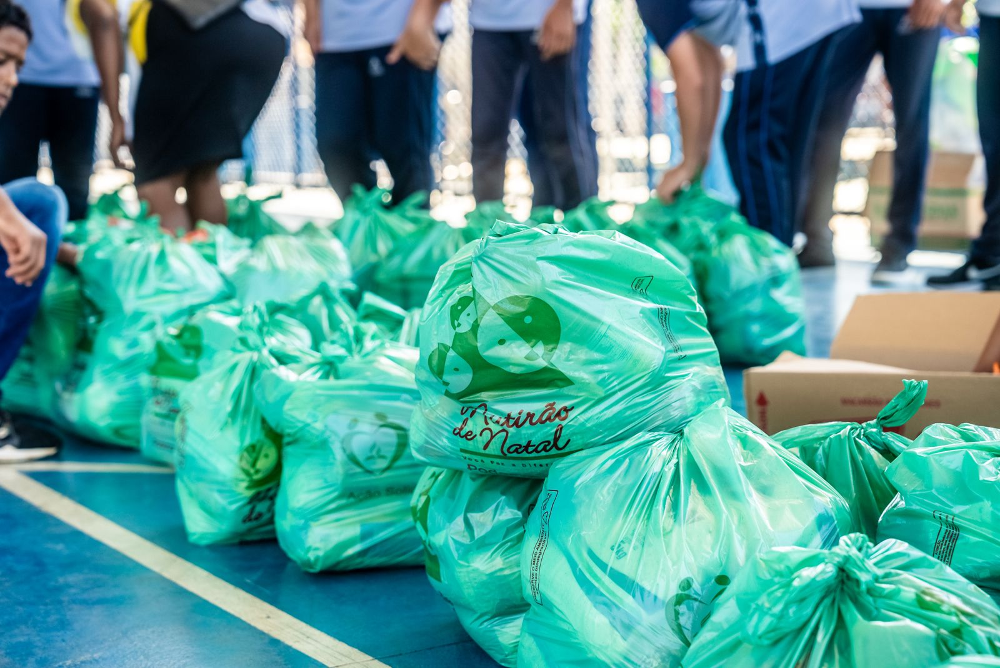

Educação Transformadora
Apoio escolar no contraturno para garantir o desenvolvimento cognitivo e cidadão de crianças e jovens.
A ONG Esperança Viva atua no fortalecimento de famílias em situação de vulnerabilidade, promovendo educação de qualidade, segurança alimentar e autonomia profissional.

Apoio escolar no contraturno para garantir o desenvolvimento cognitivo e cidadão de crianças e jovens.
Distribuição contínua de mantimentos e orientação nutricional para famílias em vulnerabilidade extrema.
Oficinas e cursos rápidos voltados à geração de renda e autonomia no mercado de trabalho.
“O projeto mudou a rotina dos meus filhos. O reforço escolar trouxe alegria e melhorou muito as notas na escola.”
— Maria Rita, Mãe de aluno atendido
“Ser voluntário na Esperança Viva abriu meus olhos para a força da união comunitária. É uma experiência transformadora.”
— Carlos Eduardo, Voluntário de Informática
“Com as oficinas consegui meu primeiro emprego formal. Hoje tenho estabilidade e perspectiva de futuro.”
— Beatriz Souza, Ex-aluna e Empregada
“O projeto mudou a rotina dos meus filhos. O reforço escolar trouxe alegria e melhorou muito as notas na escola.”
— Maria Rita, Mãe de aluno atendido
“Ser voluntário na Esperança Viva abriu meus olhos para a força da união comunitária. É uma experiência transformadora.”
— Carlos Eduardo, Voluntário de Informática
“Com as oficinas consegui meu primeiro emprego formal. Hoje tenho estabilidade e perspectiva de futuro.”
— Beatriz Souza, Ex-aluna e Empregada
Publicamos anualmente os resultados sociais e financeiros das nossas iniciativas. A transparência é o pilar que garante a confiança de doadores, parceiros e da comunidade atendida.